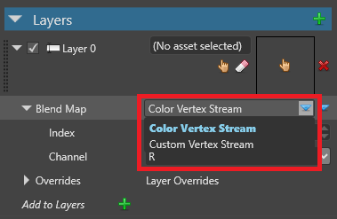
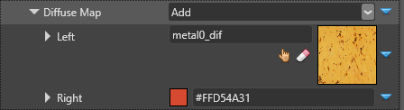

Material maps
Warning
Приносим свои извинения за неудобства. Для этой страницы нет перевода на русский язык. Она будет отображаться на английском языке.
Intermediate Artist Programmer
Material maps calculate how materials are rendered. They can use two kinds of values: color (RGB) values or scalar (single float) values.
You can use material maps for several purposes, including gloss maps, diffuse maps, or blend maps (for combining material layers)
Material maps can fetch values using one of several providers:
- Vertex stream: a value taken from mesh attributes
- Binary operator: a combination of any other two providers
- Float4 / Float: a constant value
- Color: a hex color value
- Shader: a value provided by a ComputeColor shader. This lets you use procedural values
- Texture: a value sampled from a texture
To choose the provider, click  (Replace) and select it from the drop-down menu:
(Replace) and select it from the drop-down menu:
Vertex stream
This provider takes a value from an attribute of the mesh of the model you apply the material to.
It has two modes: Color Vertex Stream and Custom Vertex Stream. To switch between them, with Vertex Stream selected as the provider, click  (Replace) and choose the mode you want to use.
(Replace) and choose the mode you want to use.

Color vertex stream
Takes a color value from the mesh.
| Property | Description |
|---|---|
| Index | The index in the named stream |
| Channel | The channel (RGBA) to sample from the stream |
Custom vertex stream
Takes a value from the mesh channel you specify.
| Property | Description |
|---|---|
| Name | Semantic name of the channel to read data from |
| Channel | The channel (RGBA) to sample from the stream |
Binary operator
Perform a binary operation from two color/scalar value providers. You can nest as many material maps inside binary operators as you need (including further binary operators).
To choose how the operation works, click  (Replace) and select from the drop-down menu. The operations are similar to options when blending layers in Photoshop.
(Replace) and select from the drop-down menu. The operations are similar to options when blending layers in Photoshop.
Result = LeftColor <operator> RightColor

| Property | Description |
|---|---|
| Operator | A binary operator (eg add, multiply, etc) |
| Left | The left color/scalar used in the operation |
| Right | The right color/scalar used in the operation |
Float4 / Float
Provided directly as a constant value over the whole material.
In the case of RGB values, you control the RGBA value with the X, Y, Z and W values (Float4).
In the case of scalar values, you control the value with a slider (Float).

Color
A value provided from a color hex value. This is only available for material maps that use RGB values.

Shader
A value provided by a ComputeColor shader. This lets you use procedural values.
For an example of a ComputeColor shader, see the Particle materials tutorial.
Texture
Sample the color/scalar from a texture.
For example, the images below demonstrate how the texture changes the way Stride blends materials.


| Property | Description |
|---|---|
| Texture | A reference to a texture |
| Channel | The channel (R, G, B, A) used to extract the scalar value. Only valid for scalar textures |
| Texcoord Index | The texture coordinates (u,v) to use from the mesh with this texture |
| Filtering | The sampling method (eg Linear, Point, Anisotropic, etc) |
| Address Mode U / V |
|
| Scale | A scale applied to (u,v) |
| Offset | An offset applied to (u,v) |